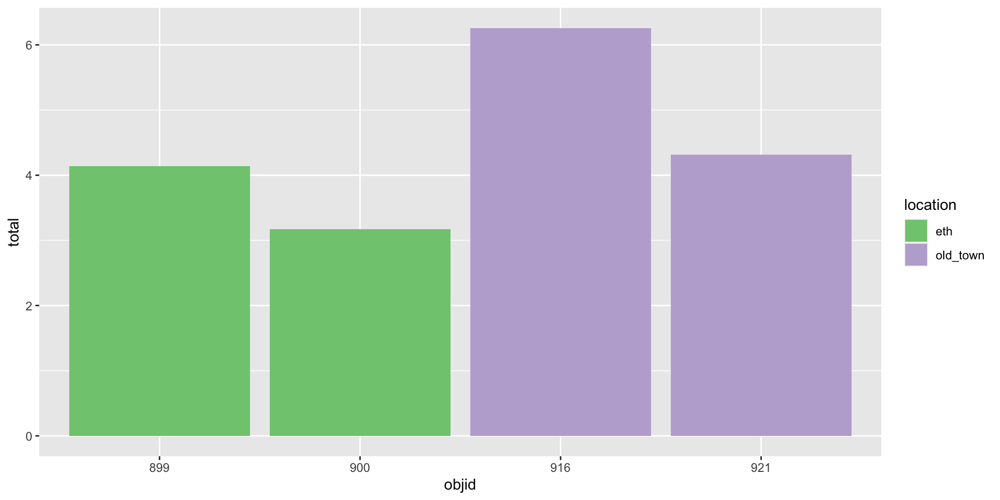
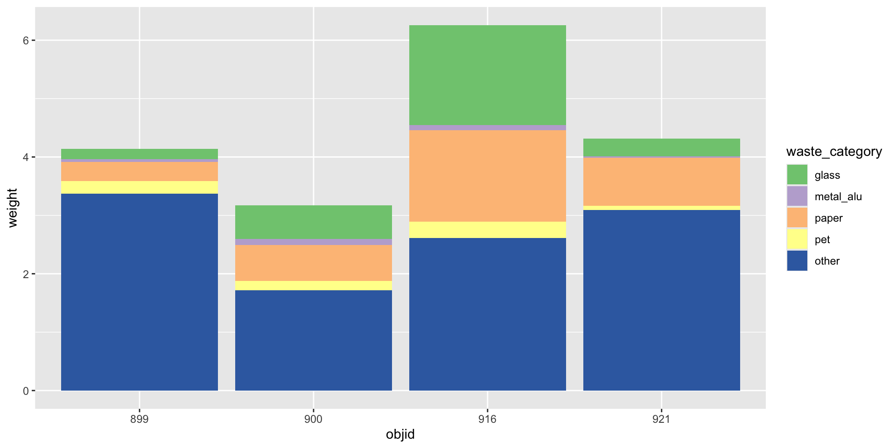

- Learners can apply functions from the dplyr R Package to join multiple data sets.
- Learners can add literature references to Quarto files using the navigation menu of RStudio visual editor and using an exported collection in .bib format from Zotero Reference Management software
- Learners can cross-reference figures and tables within an Quarto file.
- Learners can use the GitHub pages service to publish a repository as a standalone website.
Joining tables & Creating and publishing scholarly articles with Quarto and GitHub pages
Research Beyond the Lab: Open Science and Research Methods for a Global Engineer
Lars Schöbitz
2023-12-12
Learning Objectives (for this week)
Homework module 6
Your turn: Discuss the reading
In discussion groups of 3, share your examples and discuss how the recommendations would improve your workflows.
In your homework you have read Wilson et al. (2017): “Good enough practices in scientific computing”.
You chose one of the recommended practices (Data Management, Software, Collaboration, Project organization, Keeping track of changes, Manuscripts), then:
You came up with a real-world example or scenario where the recommended practice could be applied in your research or academic work.
You are prepared to explain how the recommended practices would improve your workflows. This will be in the class setting as part of small discussion group (max 3 people).
10:00
Part 1: Pivoting data
Pivoting data

Waste characterisation data
| objid | location | pet | metal_alu | glass | paper | other | total |
|---|---|---|---|---|---|---|---|
| 900 | eth | 0.06 | 0.06 | 0.58 | 0.21 | 1.14 | 2.05 |
| 899 | eth | 0.14 | 0.01 | 0.18 | 0.28 | 3.04 | 3.64 |
| 921 | old_town | 0.00 | 0.00 | 0.00 | 0.41 | 1.57 | 1.99 |
| 916 | old_town | 0.17 | 0.04 | 0.80 | 0.55 | 0.62 | 2.19 |
| 900 | eth | 0.10 | 0.04 | 0.00 | 0.40 | 0.58 | 1.12 |
| 899 | eth | 0.08 | 0.03 | 0.00 | 0.05 | 0.34 | 0.50 |
| 921 | old_town | 0.08 | 0.03 | 0.30 | 0.40 | 1.52 | 2.33 |
| 916 | old_town | 0.11 | 0.04 | 0.92 | 1.01 | 1.99 | 4.07 |
How would you plot this?
Three variables
| objid | location | total |
|---|---|---|
| 900 | eth | 2.05 |
| 899 | eth | 3.64 |
| 921 | old_town | 1.99 |
| 916 | old_town | 2.19 |
| 900 | eth | 1.12 |
| 899 | eth | 0.50 |
| 921 | old_town | 2.33 |
| 916 | old_town | 4.07 |
Three variables -> three aesthetics

And how to plot this?

Reminder: Data (in wide format)
| objid | location | pet | metal_alu | glass | paper | other |
|---|---|---|---|---|---|---|
| 900 | eth | 0.06 | 0.06 | 0.58 | 0.21 | 1.14 |
| 899 | eth | 0.14 | 0.01 | 0.18 | 0.28 | 3.04 |
| 921 | old_town | 0.00 | 0.00 | 0.00 | 0.41 | 1.57 |
| 916 | old_town | 0.17 | 0.04 | 0.80 | 0.55 | 0.62 |
| 900 | eth | 0.10 | 0.04 | 0.00 | 0.40 | 0.58 |
| 899 | eth | 0.08 | 0.03 | 0.00 | 0.05 | 0.34 |
| 921 | old_town | 0.08 | 0.03 | 0.30 | 0.40 | 1.52 |
| 916 | old_town | 0.11 | 0.04 | 0.92 | 1.01 | 1.99 |
You need: A long format
| objid | location | waste_category | weight |
|---|---|---|---|
| 900 | eth | pet | 0.06 |
| 900 | eth | metal_alu | 0.06 |
| 900 | eth | glass | 0.58 |
| 900 | eth | paper | 0.21 |
| 900 | eth | other | 1.14 |
| 899 | eth | pet | 0.14 |
| 899 | eth | metal_alu | 0.01 |
| 899 | eth | glass | 0.18 |
| 899 | eth | paper | 0.28 |
| 899 | eth | other | 3.04 |
| 921 | old_town | pet | 0.00 |
| 921 | old_town | metal_alu | 0.00 |
| 921 | old_town | glass | 0.00 |
| 921 | old_town | paper | 0.41 |
| 921 | old_town | other | 1.57 |
| 916 | old_town | pet | 0.17 |
| 916 | old_town | metal_alu | 0.04 |
| 916 | old_town | glass | 0.80 |
| 916 | old_town | paper | 0.55 |
| 916 | old_town | other | 0.62 |
| 900 | eth | pet | 0.10 |
| 900 | eth | metal_alu | 0.04 |
| 900 | eth | glass | 0.00 |
| 900 | eth | paper | 0.40 |
| 900 | eth | other | 0.58 |
| 899 | eth | pet | 0.08 |
| 899 | eth | metal_alu | 0.03 |
| 899 | eth | glass | 0.00 |
| 899 | eth | paper | 0.05 |
| 899 | eth | other | 0.34 |
| 921 | old_town | pet | 0.08 |
| 921 | old_town | metal_alu | 0.03 |
| 921 | old_town | glass | 0.30 |
| 921 | old_town | paper | 0.40 |
| 921 | old_town | other | 1.52 |
| 916 | old_town | pet | 0.11 |
| 916 | old_town | metal_alu | 0.04 |
| 916 | old_town | glass | 0.92 |
| 916 | old_town | paper | 1.01 |
| 916 | old_town | other | 1.99 |
Three variables -> three aesthetics

How to
| objid | location | pet | metal_alu | glass | paper | other |
|---|---|---|---|---|---|---|
| 900 | eth | 0.06 | 0.06 | 0.58 | 0.21 | 1.14 |
| 899 | eth | 0.14 | 0.01 | 0.18 | 0.28 | 3.04 |
| 921 | old_town | 0.00 | 0.00 | 0.00 | 0.41 | 1.57 |
| 916 | old_town | 0.17 | 0.04 | 0.80 | 0.55 | 0.62 |
| 900 | eth | 0.10 | 0.04 | 0.00 | 0.40 | 0.58 |
| 899 | eth | 0.08 | 0.03 | 0.00 | 0.05 | 0.34 |
| 921 | old_town | 0.08 | 0.03 | 0.30 | 0.40 | 1.52 |
| 916 | old_town | 0.11 | 0.04 | 0.92 | 1.01 | 1.99 |
How to
| objid | location | waste_category | weight |
|---|---|---|---|
| 900 | eth | pet | 0.06 |
| 900 | eth | metal_alu | 0.06 |
| 900 | eth | glass | 0.58 |
| 900 | eth | paper | 0.21 |
| 900 | eth | other | 1.14 |
| 899 | eth | pet | 0.14 |
| 899 | eth | metal_alu | 0.01 |
| 899 | eth | glass | 0.18 |
| 899 | eth | paper | 0.28 |
| 899 | eth | other | 3.04 |
| 921 | old_town | pet | 0.00 |
| 921 | old_town | metal_alu | 0.00 |
| 921 | old_town | glass | 0.00 |
| 921 | old_town | paper | 0.41 |
| 921 | old_town | other | 1.57 |
| 916 | old_town | pet | 0.17 |
| 916 | old_town | metal_alu | 0.04 |
| 916 | old_town | glass | 0.80 |
| 916 | old_town | paper | 0.55 |
| 916 | old_town | other | 0.62 |
| 900 | eth | pet | 0.10 |
| 900 | eth | metal_alu | 0.04 |
| 900 | eth | glass | 0.00 |
| 900 | eth | paper | 0.40 |
| 900 | eth | other | 0.58 |
| 899 | eth | pet | 0.08 |
| 899 | eth | metal_alu | 0.03 |
| 899 | eth | glass | 0.00 |
| 899 | eth | paper | 0.05 |
| 899 | eth | other | 0.34 |
| 921 | old_town | pet | 0.08 |
| 921 | old_town | metal_alu | 0.03 |
| 921 | old_town | glass | 0.30 |
| 921 | old_town | paper | 0.40 |
| 921 | old_town | other | 1.52 |
| 916 | old_town | pet | 0.11 |
| 916 | old_town | metal_alu | 0.04 |
| 916 | old_town | glass | 0.92 |
| 916 | old_town | paper | 1.01 |
| 916 | old_town | other | 1.99 |
Three variables -> three aesthetics
Your turn: md-07-exercises - pivoting data
- Open posit.cloud in your browser (use your bookmark).
- Open the ds4owd workspace for the course.
- In the File Manager in the bottom right window, locate the
md-07a-pivoting-your-turn.qmdfile and click on it to open it in the top left window. - Follow instructions in the file
30:00
Take a break
Please get up and move! Let your emails rest in peace.
10:00
Image generated with DALL-E 3 by OpenAI
Part 2: Joining data
We…
…have multiple data frames
…want to bring them together
Data: Women in science
Information on 10 women in science who changed the world
| name |
|---|
| Ada Lovelace |
| Marie Curie |
| Janaki Ammal |
| Chien-Shiung Wu |
| Katherine Johnson |
| Rosalind Franklin |
| Vera Rubin |
| Gladys West |
| Flossie Wong-Staal |
| Jennifer Doudna |
Inputs
| name | profession |
|---|---|
| Ada Lovelace | Mathematician |
| Marie Curie | Physicist and Chemist |
| Janaki Ammal | Botanist |
| Chien-Shiung Wu | Physicist |
| Katherine Johnson | Mathematician |
| Rosalind Franklin | Chemist |
| Vera Rubin | Astronomer |
| Gladys West | Mathematician |
| Flossie Wong-Staal | Virologist and Molecular Biologist |
| Jennifer Doudna | Biochemist |
| name | birth_year | death_year |
|---|---|---|
| Janaki Ammal | 1897 | 1984 |
| Chien-Shiung Wu | 1912 | 1997 |
| Katherine Johnson | 1918 | 2020 |
| Rosalind Franklin | 1920 | 1958 |
| Vera Rubin | 1928 | 2016 |
| Gladys West | 1930 | NA |
| Flossie Wong-Staal | 1947 | NA |
| Jennifer Doudna | 1964 | NA |
| name | known_for |
|---|---|
| Ada Lovelace | first computer algorithm |
| Marie Curie | theory of radioactivity, discovery of elements polonium and radium, first woman to win a Nobel Prize |
| Janaki Ammal | hybrid species, biodiversity protection |
| Chien-Shiung Wu | confim and refine theory of radioactive beta decy, Wu experiment overturning theory of parity |
| Katherine Johnson | calculations of orbital mechanics critical to sending the first Americans into space |
| Vera Rubin | existence of dark matter |
| Gladys West | mathematical modeling of the shape of the Earth which served as the foundation of GPS technology |
| Flossie Wong-Staal | first scientist to clone HIV and create a map of its genes which led to a test for the virus |
| Jennifer Doudna | one of the primary developers of CRISPR, a ground-breaking technology for editing genomes |
Desired output
| name | profession | birth_year | death_year | known_for |
|---|---|---|---|---|
| Ada Lovelace | Mathematician | NA | NA | first computer algorithm |
| Marie Curie | Physicist and Chemist | NA | NA | theory of radioactivity, discovery of elements polonium and radium, first woman to win a Nobel Prize |
| Janaki Ammal | Botanist | 1897 | 1984 | hybrid species, biodiversity protection |
| Chien-Shiung Wu | Physicist | 1912 | 1997 | confim and refine theory of radioactive beta decy, Wu experiment overturning theory of parity |
| Katherine Johnson | Mathematician | 1918 | 2020 | calculations of orbital mechanics critical to sending the first Americans into space |
| Rosalind Franklin | Chemist | 1920 | 1958 | NA |
| Vera Rubin | Astronomer | 1928 | 2016 | existence of dark matter |
| Gladys West | Mathematician | 1930 | NA | mathematical modeling of the shape of the Earth which served as the foundation of GPS technology |
| Flossie Wong-Staal | Virologist and Molecular Biologist | 1947 | NA | first scientist to clone HIV and create a map of its genes which led to a test for the virus |
| Jennifer Doudna | Biochemist | 1964 | NA | one of the primary developers of CRISPR, a ground-breaking technology for editing genomes |
Inputs, reminder
Joining data frames
left_join(): all rows from xright_join(): all rows from yfull_join(): all rows from both x and y- …
Setup
For the next few slides…
left_join()

left_join()
| name | profession | birth_year | death_year |
|---|---|---|---|
| Ada Lovelace | Mathematician | NA | NA |
| Marie Curie | Physicist and Chemist | NA | NA |
| Janaki Ammal | Botanist | 1897 | 1984 |
| Chien-Shiung Wu | Physicist | 1912 | 1997 |
| Katherine Johnson | Mathematician | 1918 | 2020 |
| Rosalind Franklin | Chemist | 1920 | 1958 |
| Vera Rubin | Astronomer | 1928 | 2016 |
| Gladys West | Mathematician | 1930 | NA |
| Flossie Wong-Staal | Virologist and Molecular Biologist | 1947 | NA |
| Jennifer Doudna | Biochemist | 1964 | NA |
right_join()

right_join()
| name | profession | birth_year | death_year |
|---|---|---|---|
| Janaki Ammal | Botanist | 1897 | 1984 |
| Chien-Shiung Wu | Physicist | 1912 | 1997 |
| Katherine Johnson | Mathematician | 1918 | 2020 |
| Rosalind Franklin | Chemist | 1920 | 1958 |
| Vera Rubin | Astronomer | 1928 | 2016 |
| Gladys West | Mathematician | 1930 | NA |
| Flossie Wong-Staal | Virologist and Molecular Biologist | 1947 | NA |
| Jennifer Doudna | Biochemist | 1964 | NA |
full_join()

full_join()
| name | birth_year | death_year | known_for |
|---|---|---|---|
| Janaki Ammal | 1897 | 1984 | hybrid species, biodiversity protection |
| Chien-Shiung Wu | 1912 | 1997 | confim and refine theory of radioactive beta decy, Wu experiment overturning theory of parity |
| Katherine Johnson | 1918 | 2020 | calculations of orbital mechanics critical to sending the first Americans into space |
| Rosalind Franklin | 1920 | 1958 | NA |
| Vera Rubin | 1928 | 2016 | existence of dark matter |
| Gladys West | 1930 | NA | mathematical modeling of the shape of the Earth which served as the foundation of GPS technology |
| Flossie Wong-Staal | 1947 | NA | first scientist to clone HIV and create a map of its genes which led to a test for the virus |
| Jennifer Doudna | 1964 | NA | one of the primary developers of CRISPR, a ground-breaking technology for editing genomes |
| Ada Lovelace | NA | NA | first computer algorithm |
| Marie Curie | NA | NA | theory of radioactivity, discovery of elements polonium and radium, first woman to win a Nobel Prize |
Putting it altogether
| name | profession | birth_year | death_year | known_for |
|---|---|---|---|---|
| Ada Lovelace | Mathematician | NA | NA | first computer algorithm |
| Marie Curie | Physicist and Chemist | NA | NA | theory of radioactivity, discovery of elements polonium and radium, first woman to win a Nobel Prize |
| Janaki Ammal | Botanist | 1897 | 1984 | hybrid species, biodiversity protection |
| Chien-Shiung Wu | Physicist | 1912 | 1997 | confim and refine theory of radioactive beta decy, Wu experiment overturning theory of parity |
| Katherine Johnson | Mathematician | 1918 | 2020 | calculations of orbital mechanics critical to sending the first Americans into space |
| Rosalind Franklin | Chemist | 1920 | 1958 | NA |
| Vera Rubin | Astronomer | 1928 | 2016 | existence of dark matter |
| Gladys West | Mathematician | 1930 | NA | mathematical modeling of the shape of the Earth which served as the foundation of GPS technology |
| Flossie Wong-Staal | Virologist and Molecular Biologist | 1947 | NA | first scientist to clone HIV and create a map of its genes which led to a test for the virus |
| Jennifer Doudna | Biochemist | 1964 | NA | one of the primary developers of CRISPR, a ground-breaking technology for editing genomes |
Part 3: Metadata
Metadata: data about data
WHAT!?
Faecal sludge samples
Imagine:
- you are new to WASH research and you have never heard of feacal sludge management.
- you are interested in learning more about the topic and you want to find some data to play with.
- you find a publication with a dataset on faecal sludge characteristics.
Faecal sludge samples
You download the XLSX file that contains the data and you open it in Excel. You see the following:

Faecal sludge samples
Open questions:
- What unit does
usersrefer to? - What does
tsstand for? - The
dateof what? - Where was this data collected?
- Which method was used to collect the samples?
Questions that only the original author may have the answers to.
You as an author
have the chance to document your data properly once to make it easier for everyone else to know what it contains.
Documentation
Goes into a separate README file
- General information (authors, title, date, geographic location, etc.)
- Sharing / access information (license, links to publications, citation)
- Methodological information (sampling, analysis, etc.)
Data dictionary
Goes into a separate file (dictionary.csv).
Minimum required information
- Variable name
- Variable description
Data dictionary for faecal sludge samples
- Edit in spreadsheet software (e.g. MS Excel)

Data dictionary for faecal sludge samples
- Save as CSV file

Directory tree of a project
Capstone project of Rainbow Train: https://github.com/rbtl-fs24/project-rainbow-train
.
├── R
│ └── 01-data-preparation.R
├── data
│ ├── processed
│ │ ├── README.md
│ │ ├── dictionary.csv
│ │ └── faecal-sludge-analysis.csv
│ └── raw
│ └── Faecal sludge Analysis_05112023.xlsx
├── docs
│ ├── index.html
│ ├── index.qmd
│ └── index_files
│ └── libs
└── project.RprojDirectory tree of a project
Rfolder: R scripts for data cleaningdatafolder: raw and processed datadocsfolder: the actual report that imports the processed dataproject.Rproj: RStudio project file
Inside the data folder
raw: data as it was downloaded / as you received it (e.g. Excel file)processed: data that is ready to be used in the report
Inside the processed folder
README.md: general information about the datadictionary.csv: data dictionaryfaecal-sludge-analysis.csv: cleaned data for whichdictionary.csvapplies
My turn: A tour of Rainbow Train’s project
Sit back and enjoy!
10:00
Homework assignments module 7
Module 7 documentation
Homework due date
- Homework assignment due: Monday, December 18th
- Feedback until: Thursday, December 21st
Wrap-up
Final student hours of 2023
- Thursday, December 14th at 2 pm CET
First student hours of 2024
- Thursday, January 11th at 2 pm CET
Christmas break
- Lars will be on vacation from December 22nd until January 15th
- Mian and Sophia will be on vacation from December 22nd until January 8th
Image generated with DALL-E 3 by OpenAI
First lecture of 2024
Tuesday, January 16th at 2 pm CET
![A pixel art scene depicting a group of little people, both female and male, enthusiastically returning to their coding tasks after celebrating New Year's. They are sitting in front of computers with festive decorations around, like streamers and a 'Happy New Year' banner. The characters exhibit diversity in their appearances and attire, reflecting a joyful and inclusive environment. Each individual is engaged in typing or looking at their computer screens, with visible lines of code. The setting is a cozy office space with hints of the recent celebration still present.](img/lec-07/new-year-coding.png)
Image generated with DALL-E 3 by OpenAI
Course calendar
| module | date | topic |
|---|---|---|
| 1 | 22 February 2024 | Welcome & get ready for the course |
| 2 | 29 February 2024 | Data science lifecycle & Exploratory data analysis using visualization |
| 3 | 07 March 2024 | Data transformation with dplyr |
| 4 | 14 March 2024 | Data import & Data organization in spreadsheets |
| 5 | 21 March 2024 | Conditions & Dates & Tables |
| 6 | 28 March 2024 | Data types & Vectors & Pivoting |
| NA | 04 April 2024 | Easter Break |
| 7 | 11 April 2024 | Joining tables & Creating and publishing scholarly articles with Quarto and GitHub pages |
| 8 | 18 April 2024 | Waste Research |
| 9 | 25 April 2024 | Research Design |
| 10 | 02 May 2024 | Survey Design |
| NA | 09 May 2024 | Auffahrt Break |
| 11 | 16 May 2024 | Pre-test and logistics |
| NA | 23 May 2024 | Data collection |
| 12 | 30 May 2024 | Data analysis & report writing |
| NA | 06 June 2024 | Project Submission Deadline |
| NA | 13 June 2024 | Exam |
Thanks! 🌻
Slides created via revealjs and Quarto: https://quarto.org/docs/presentations/revealjs/ Access slides as PDF on GitHub
References
All material is licensed under Creative Commons Attribution Share Alike 4.0 International.
Wilson, Greg, Jennifer Bryan, Karen Cranston, Justin Kitzes, Lex Nederbragt, and Tracy K. Teal. 2017. “Good Enough Practices in Scientific Computing.” PLOS Computational Biology 13 (6): e1005510. https://doi.org/10.1371/journal.pcbi.1005510.